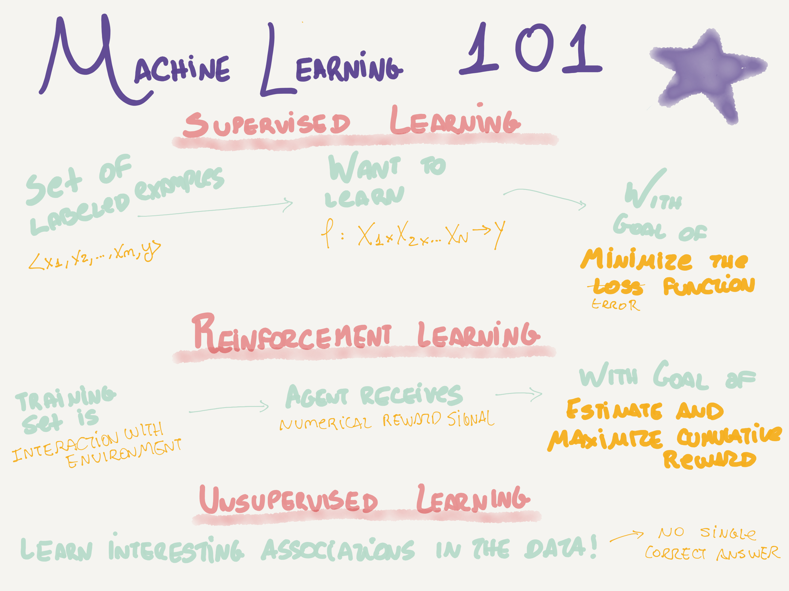
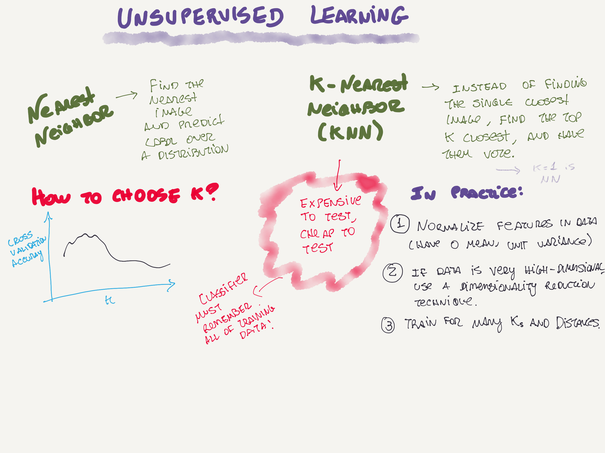
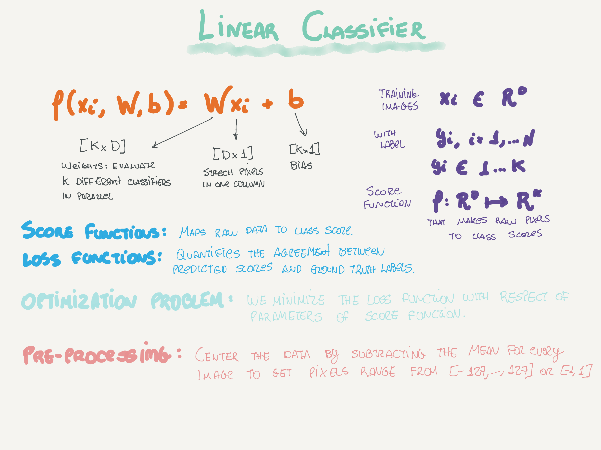
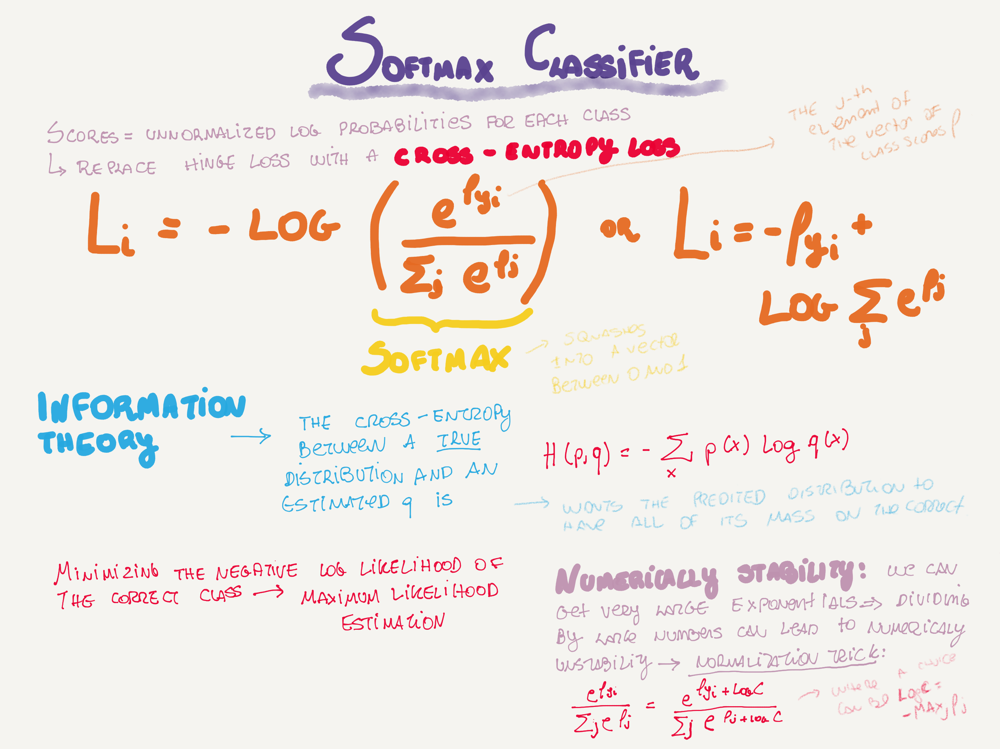

Articles
- Teaching an AI to write Python code with Python code
- Understanding LSTM Networks
- Starting DL with Jupyter
- DIY Deep Learning for Vision: a Hands-On Tutorial with Caffe
- Wide & Deep Learning: Better Together with TensorFlow. Can we teach computers to learn like humans do, by combining the power of memorization and generalization?
Papers
-
Mastering the Game of Go with Deep Neural Networks and Tree Search. "All games of perfect information have an optimal value function which determines the outcome of the game". , Basically:
- Values networks to evaluate board positions and policy networks to select moves.
- Trained with supervised learning from human expert games and reinforcement learning from games of self-play.
- NN playS Go at the level of state-of-art Monte-Carlo tree search that simulate thousands of random games of self-play.
- New search algorithm that combines Monte-Carlo simulation with value and policy network.
-
Adversarial Examples in the Physical World (Kurakin, et al., 2016).
Talks
- Deep Residual Networks, Kaiming He, Facebook AI Research.
- AlphaGo Presentation.
- Prof. Jürgen Schmidhuber - True Artificial Intelligence Will Change Everything.
Learning
Fun

  
Comments !